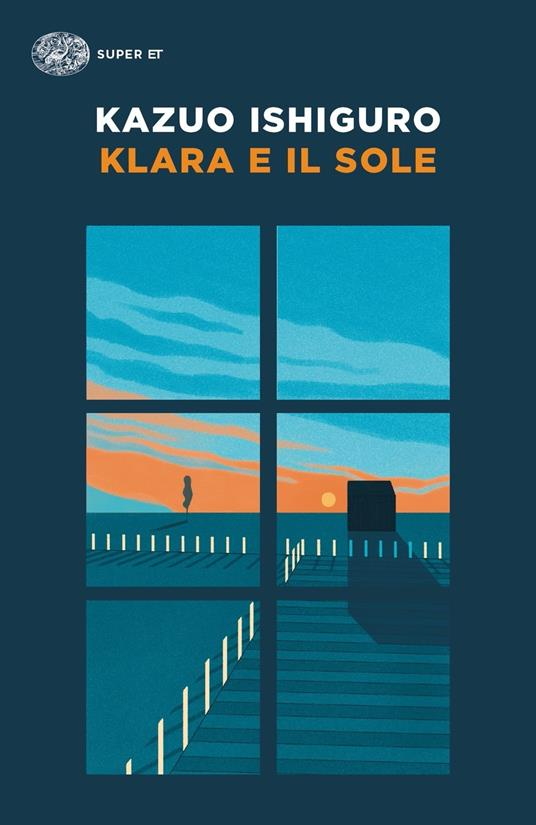

Tanti dicono che meriti anche questo libro:

Se vuoi leggere altro dell'autore:

Trama: Per una lettura più autentica consiglio di non leggere la trama.
Kathy, Tommy e Ruth vivono in un collegio, Hailsham, immerso nella campagna inglese. Non hanno genitori, ma non sono neppure orfani, e crescono insieme ai compagni, accuditi da un gruppo di tutori, che si occupano della loro educazione. Fin dalla piú tenera età nasce fra i tre bambini una grande amicizia. La loro vita, voluta e programmata da un’autorità superiore nascosta, sarà accompagnata dalla musica dei sentimenti, dall’intimità piú calda al distacco piú violento. Una delle responsabili del collegio, che i bambini chiamano semplicemente Madame, si comporta in modo strano con i piccoli. Anche gli altri tutori hanno talvolta reazioni eccessive quando i bambini pongono domande apparentemente semplici. Cosa ne sarà di loro in futuro? Che cosa significano le parole «donatore» e «assistente»? E perché i loro disegni e le loro poesie, raccolti da Madame in un luogo misterioso, sono cosí importanti?
Cosa ne penso io: Appena finito non sono rimasta soddisfatta. La fine non mi sembrava una fine e aspettandomi una grande rivelazione a causa delle recensioni online, sono rimasta un po' delusa. Tutta la faccenda etica, sull'anima e il suo legame con la fantasia/creatività però mi aveva convinta fin da subito.
Dopo una settimana la mia opinione è cambiata. Mi sono resa conto di continuare a pensare a questo libro perchè mi aveva instillato dubbi che non mi ero mai posta. Arriverà un giorno in cui il mondo sarà così? Le persone veramente non credono che i protagonisti abbiano un'anima o mentono a loro stessi per poter giustificare le loro azioni? Fin dove si possono spingere l'indifferenza e l'opportunismo umano? È proprio vero che esiste un prima e un dopo di "Non lasciarmi".
★ ★ ★ ★ ★
Tanti dicono che meriti anche questo libro:
Se vuoi leggere altro dell'autore:
